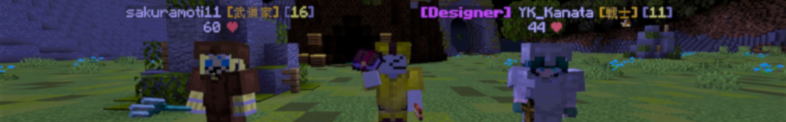
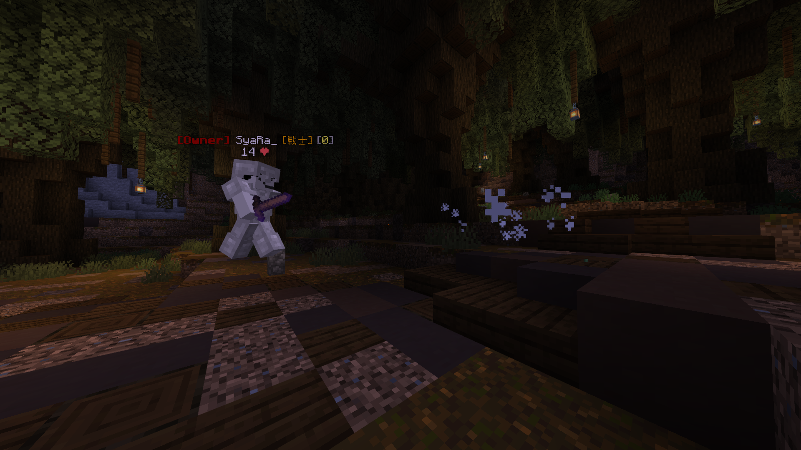
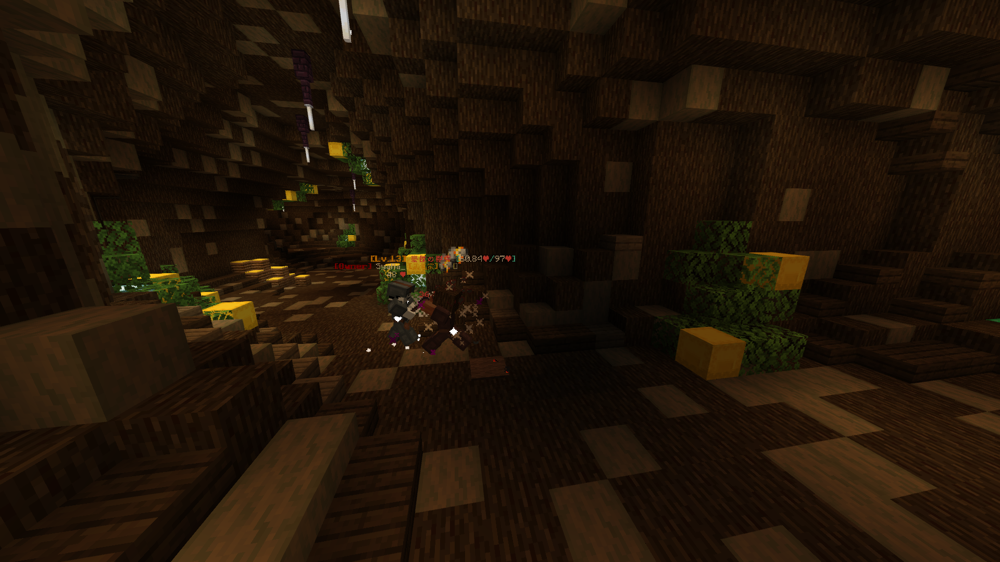
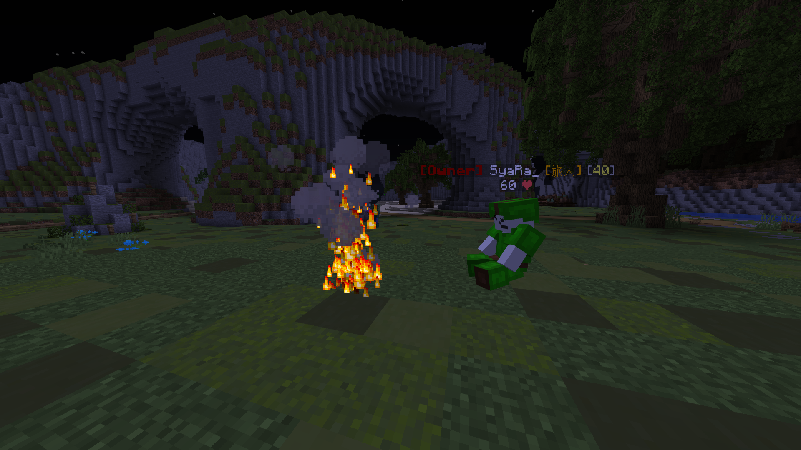
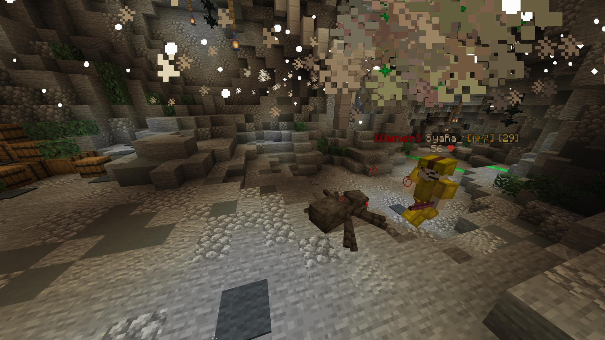
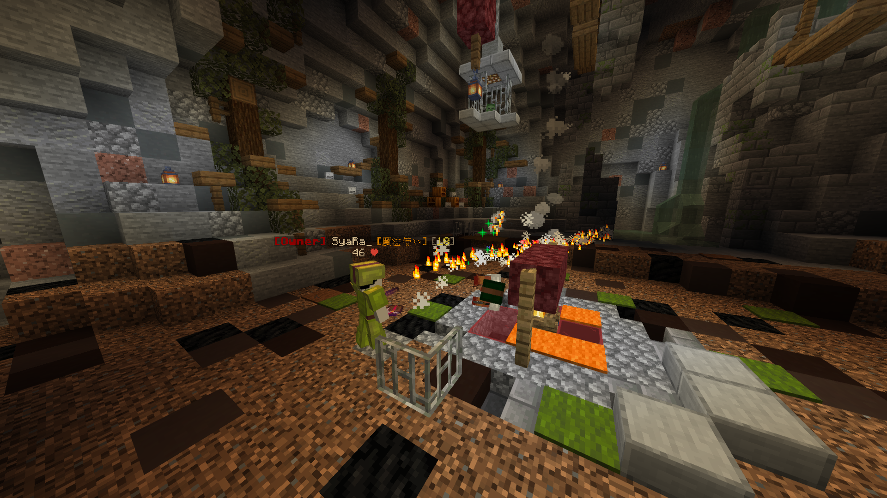

サーバー紹介②

・挨拶・
みなさん、こんにちは。運営のしゃらです。
とうとう明日はβテストですね。さて、今回で2回目のサーバー紹介ですが、
明日の12時前 βテスト開始直前にも紹介を挟もうと思います。
また、明日は開始直前生放送も行う予定ですので、ぜひお楽しみに。
・職業システム・
今回は、"職業"について説明しようと思います。
"職業"とはMine frontier の世界において必須ともいえる、あなたの役職です。
これにより、あなたの戦いはより特徴的に、鮮やかになるでしょう。
今回のβテストであなたが就ける職業は以下の5つ。
戦士

前に出て、味方を守りつつ着実に攻撃を重ねていく王道職。
防御力が上がりやすく、スキルも防御寄りのものが多いため前線で戦いやすい。
武道家

己を武器に宿し、数々の技で相手を圧倒する。
単発火力なら並ぶものは無いが、戦士に比べると打たれ弱い。
旅人

世界と共に生き、数々の戦地を渡り歩く流浪の者。
単体で活動する事が得意で、多数の移動スキルで相手を翻弄する。
僧侶

多彩な技で味方を支え、味方を勝利に導く支援職。
単独では活躍はしにくいが、彼らのバフや回復は君の勝利に大きく貢献するだろう。
魔法使い

強力な魔法を駆使し、敵を殲滅する攻撃職。
ひとたび技を放てばかなりの威力を誇るが、MPの管理が難しく中々シビアな職業。
各職業ごとに、武器や防具はもちろん、
スキル、ステータスの上がり方が違うため、
あなたに合った職業でMineFrontierを楽しんでくださいね。
2021-08-14